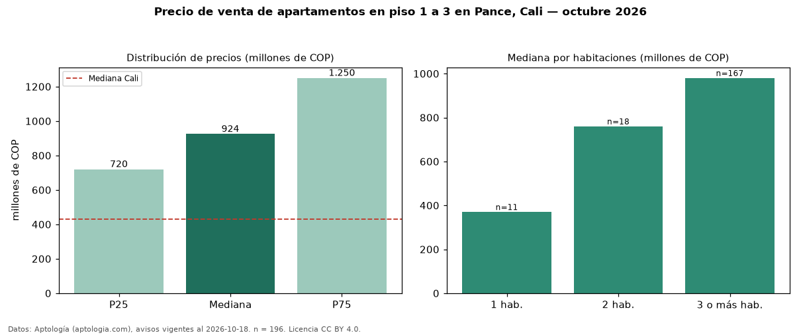

Precio de venta de apartamentos en piso 1 a 3 en Pance, Cali — octubre 2026
En Pance, Cali, la mediana de precio de venta de apartamentos en piso 1 a 3 es COP 924 millones, según 196 avisos vigentes. Prácticamente coincide con la mediana de todos los apartamentos en venta de Pance (COP 950 millones, n = 485); este segmento reúne el 40 % de esos avisos. Por metro cuadrado, la mediana es COP 6,38 millones/m² (n = 196), 9 % por debajo del conjunto de referencia (COP 7,00 millones/m²). El área mediana anunciada es 137 m². El segmento con más oferta es el de 3 o más habitaciones (167 avisos, mediana COP 980 millones); pasar de 1 habitación a 3 o más habitaciones cambia la mediana +165 %. La administración mediana declarada es COP 900.000 al mes (n = 174). El estrato más frecuente es 6 (93 % de los avisos con estrato). La mitad central de los avisos va de COP 720 millones a COP 1,25 mil millones (razón 1,7), una dispersión moderada. Datos: Aptología (aptologia.com), CC BY 4.0 — https://www.aptologia.com/venta/cali/pance. Archivos: PDF, CSV con las cifras y gráfica PNG.

| Avisos únicos | 196 |
|---|---|
| Percentil 25 | COP 720.000.000 |
| Mediana | COP 924.500.000 |
| Percentil 75 | COP 1.250.000.000 |
| Mediana por m² | COP 6.379.895 |
Fuente: avisos vigentes de portales inmobiliarios recopilados por Aptología, deduplicados (mínimo 30 avisos únicos por celda). Precios pedidos, no cerrados. Fecha: 2026-10-18.